Modulation
{kind=link}

| Name | In/Out | Width | Description |
|---|---|---|---|
| CLK | In | 1 | メインクロック |
| SETTINGS | In | - | |
| ├─ REQ_RD_SEGMENT | In | 1 | 要求読み込みセグメント |
| ├─ CYCLE[] | In | 15 | 第セグメントの周期 |
| ├─ FREQ_DIV[] | In | 16 | 第セグメントの周波数分周比 |
| ├─ REP[] | In | 16 | 第セグメントの繰り返し回数 |
| ├─ TRANSITION_MODE | In | 8 | 遷移モード |
| └─ TRANSITION_VALUE | In | 64 | 遷移値 |
| SYS_TIME | In | 56 | システム時刻 |
| DIN_VALID | In | 1 | 強度/位相データ有効フラグ |
| INTENSITY_IN | In | 8 | 強度 |
| PHASE_IN | In | 8 | 位相 |
| INTENSITY_OUT | Out | 8 | 強度 |
| PHASE_OUT | Out | 8 | 位相 |
| DOUT_VALID | Out | 1 | 強度/位相データ有効フラグ |
| MOD_BUS | In | - | 変調用メモリバス |
このモジュールは, 強度データに変調データを掛け合わせることでAM変調を実現するモジュールである. 変調データは一定の周期でメモリからサンプルされる. 変調データ領域は2つのセグメントに分けられており, それぞれ独立に設定できる.
また, 位相に関しては強度データと歩調を合わせるためにここでディレイを入れている.
Timer
このサブモジュールは, システム時刻, 周期, 周波数分周比から, 現在読み込むべき変調データのインデックスを計算する.
変調データのインデックスは
として計算される.
SYS_TIMEはでカウントアップされため, AMデータのサンプリング周波数は
となり, はこの周波数でからまで周期的にカウントアップされる.
SYS_TIMEがすべてのデバイスで同期しているため, このインデックスも必然的にすべてのデバイスで同期する.
NOTE:
SETTINGSで指定するCYCLEはであることに注意する.
Swapchain
このサブモジュールはセグメントの切り替えを制御する.
セグメント切替時の挙動は以下の通りである.
- 要求されたセグメントが1の場合
- 第1セグメントの繰り返し回数が0xFFFFの場合, 直ちにセグメントを1に切り替え, 無限ループする.
- 遷移モードが
EXTの場合, セグメントないのデータを一周するたび, セグメントを自動的に切り替える.
- 遷移モードが
- 第1セグメントの繰り返し回数が0xFFFF以外の場合, 遷移モードに従って, セグメントの切り替えを待機する. セグメント切り替え後, 指定回数の繰り返しが終わった後,
STOPをアサートする.- 遷移モードが
SYNC_IDXの場合, 第1セグメントのインデックスが0になったら, セグメントを1に切り替える. - 遷移モードが
SYS_TIMEの場合, システム時間が遷移値で指定された値になったらセグメントを1に切り替え, インデックスを0に初期化. - 遷移モードが
GPIOの場合, 遷移値で指定されたGPIO Inピンがアサートされたらセグメントを1に切り替え, インデックスを0に初期化
- 遷移モードが
- 第1セグメントの繰り返し回数が0xFFFFの場合, 直ちにセグメントを1に切り替え, 無限ループする.
- 要求されたセグメントが0の場合も同様
NOTE:
SETTINGSで指定するREPは繰り返し回数であることに注意する.
Multiplier
このサブモジュールは, 強度データに変調データを掛け合わせ, で割る.
変調データはSwapchainモジュールから渡される, SEGMENT, IDXに応じてメモリから読み出す.
なお, STOPフラグがアサートされている間は, セグメント及びインデックスを更新しない.